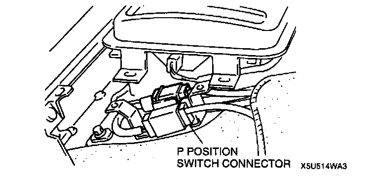
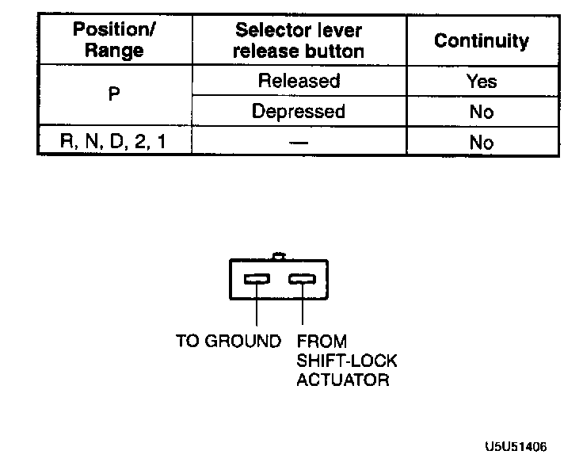
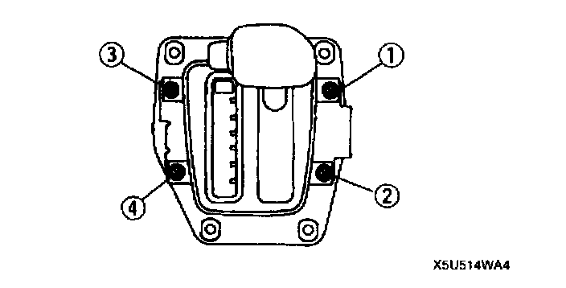

"P" Position Switch
P POSITION SWITCH INSPECTION1. Disconnect the negative battery cable.
2. Remove the rear console.
3. Remove the screws and lift up the indicator panel.

4. Disconnect the P Position switch connector.

5. Inspect for continuity between the terminals.
6. If not as specified, replace the P position switch.
7. Connect the P position switch connector.

8. Adjust the indicator panel. Install the screws in the order shown in the figure.
Tightening torque 2.0 - 2.9 Nm (20 - 30 kgf cm, 18 - 26 inch lbs.)
9. Install the rear console.
10. Connect the negative battery cable.